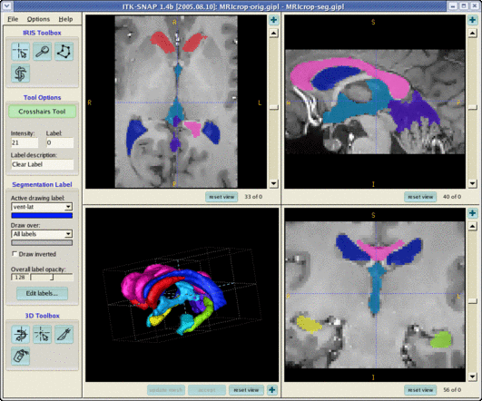

This brief section describes how to use SNAP to calculate volumes of the segmented structures, as well as the statistics of the image intensity for each structure. This section will take under 5 minutes to complete.
We will begin by loading the image that we have been working with all along. You may already have this image loaded, in which case, reloading the image will clear the results of your previous segmentations.
| Load image MRIcrop-orig.gipl as described in Section 2 |
The completed segmentation for this image is located in the same directory as the image itself and is called MRIcrop-seg.gipl
| Select File | Load Data | Segmentation Data to bring up the image input wizard. Use the wizard to load the image MRIcrop-seg.gipl Press the Update Mesh button in the 3D window panel to render the segmentation in 3D. |

In the previous step, you have loaded a segmentation that includes several structures. Now, you will create a file that contains the following information about each structure:
| Select File | Save Data | Volumes & Statistics . |
| Specify a filename with a .txt extension and press Ok. |
The volumes and statistics will be saved in a text file that you specify. The contents of this file are displayed below. The file can be imported into various spreadsheet applications.
########################################################## # SNAP Voxel Count File # File format: # LABEL: ID / NUMBER / VOLUME / MEAN / SD # Fields: # LABEL Label description # ID The numerical id of the label # NUMBER Number of voxels that have that label # VOLUME Volume of those voxels in cubic mm # MEAN Mean intensity of those voxels # SD Standard deviation of those voxels ########################################################## vent-lat : 1 / 18138 / 18138 / 22.0791 / 6.70728 vent-3rd : 2 / 2633 / 2633 / 25.763 / 6.36361 vent-4th : 3 / 4775 / 4775 / 25.4262 / 6.60467 hippo-R : 4 / 2250 / 2250 / 55.6178 / 4.47806 hippo-L : 5 / 2548 / 2548 / 52.6429 / 4.15063 vent-temp : 6 / 1047 / 1047 / 23.5244 / 7.34334 caudates : 7 / 7661 / 7661 / 56.3759 / 3.92178 corpus-callosum : 8 / 16841 / 16841 / 69.2177 / 6.05497 |